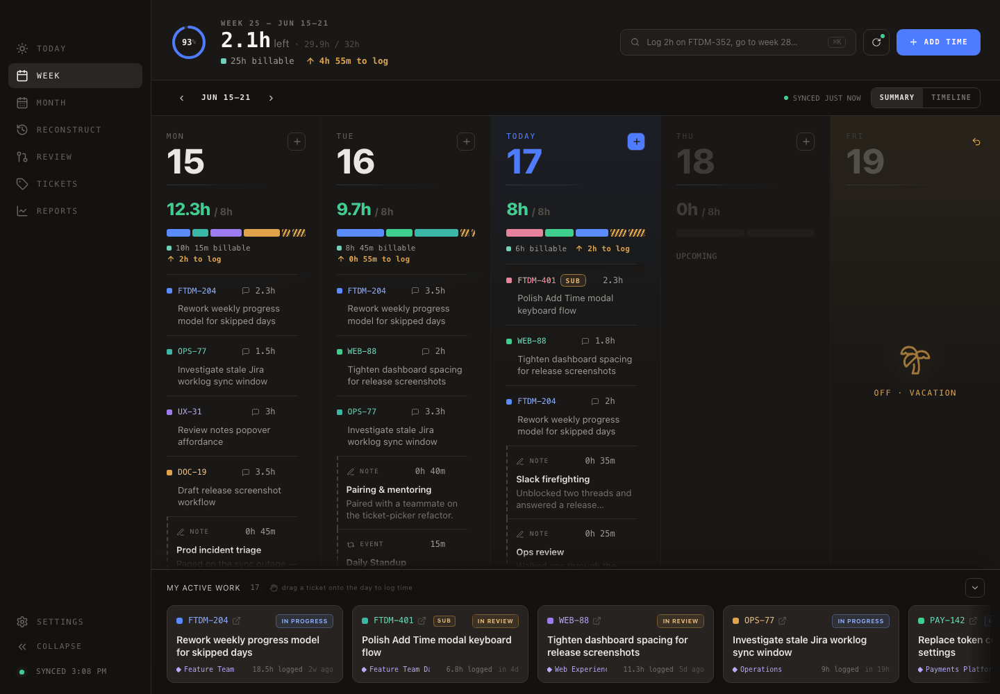
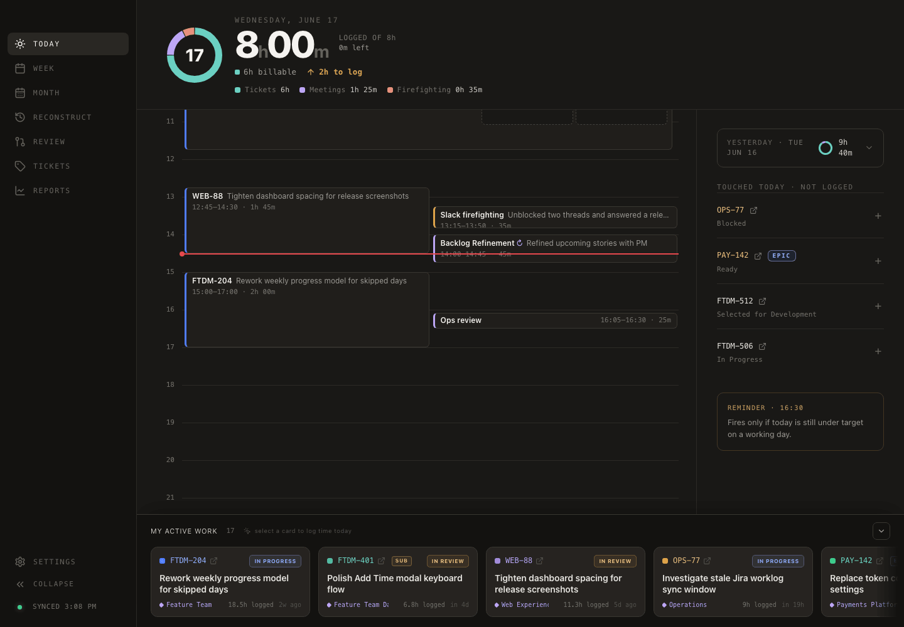
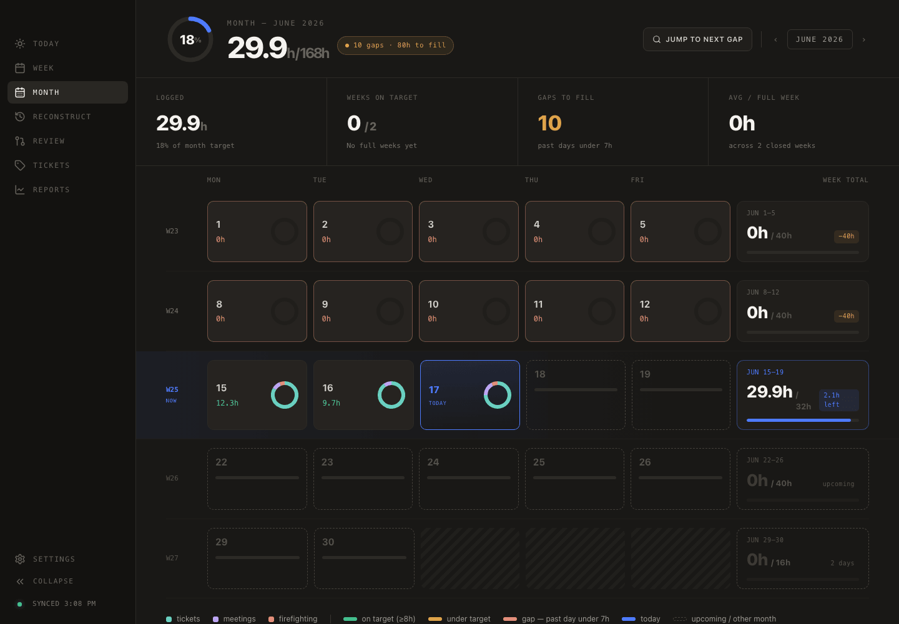
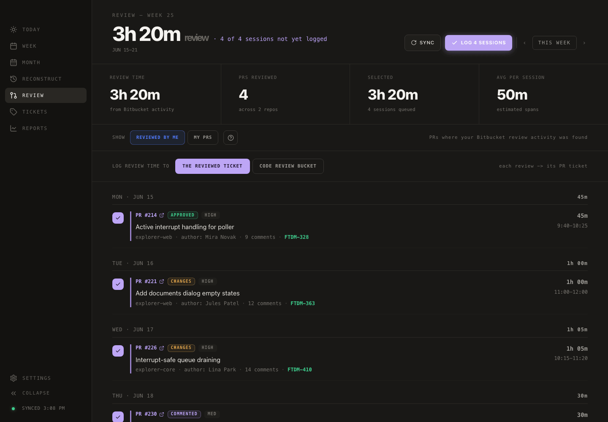
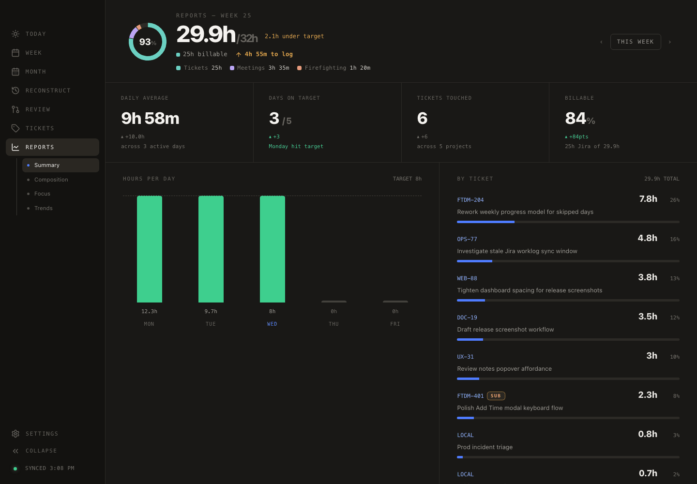

Five day columns, per‑day targets, and the one ticket that still needs an hour — the whole Monday‑to‑Friday cockpit on your desktop, no browser tab required.

78% logged 2‑click logging → drag onto any dayYour manager wants every minute logged as a KPI. TimeBro hands them clean worklogs — and hands you back the ~3 hours a week you spend reconstructing them.
And now it's Friday afternoon and you're squinting at an empty Jira worklog, trying to remember what Tuesday‑you actually did. That's where TimeBro comes in: pick a ticket, tap a duration, or just drag an in‑progress ticket onto a day and watch your weekly ring fill up.
Eight small reliefs that add up to your week, handled.
Pick a ticket, tap a duration preset, jot a note, done. A "touched today, not logged" rail nudges you about tickets you clearly worked on, and a target bar shows exactly how much is left in the day.

The whole month as a calendar, color‑coded by whether each day hit target. The "jump to next gap" button walks you straight to the days you forgot — backfilling a sloppy month takes minutes, not detective work.

Connect Bitbucket Cloud and TimeBro estimates how long you spent reviewing each pull request. Tick the sessions you want, choose where they land, and log them all to Jira in one batch. Strictly read‑only on the Bitbucket side.

Daily average, days on target, tickets touched, billable percentage, an hours‑per‑day chart, and a per‑ticket breakdown. Browse previous weeks, then export to CSV for the inevitable "can you send me the spreadsheet?"

TimeBro reconstructs a forgotten day from the signals it already syncs — your Bitbucket commits, PR reviews, and the Jira time already logged — laid out on a 09:00→18:00 timeline. Drag each signal onto the hour it belongs to, fine‑tune any duration, and watch the day add up.
It works completely without AI. Optionally point it at a local Ollama model and it polishes raw fix npe / wip commit noise into clean, send‑ready worklog sentences — entirely on your machine. No cloud, no API key, no telemetry.
Your data lives on your machine in plain old IndexedDB, and the only thing TimeBro ever phones is the Jira site you point it at.
Grab the installer for your platform. Then head to Settings → Jira, paste your site, email and API token. That's the whole setup.